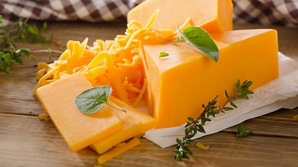

Fruit & Vegetables
All vegetables and fruits are nutritious,
but these picks have the highest levels of good-for-you nutrients
that help ward off disease, enhance cognition, and keep your heart healthy.

Sweet Potato
Along with squash and carrots, sweet potatoes are rich in beta-carotene, a potent antioxidant that protects vision.
Beta-carotene may also help reduce the risk of breast and ovarian cancers in post-menopausal women.

Broccoli
Rich in flavonoids, broccoli helps fight oxidative stress, which damages cells and leads to inflammation.
Broccoli may help ward off heart disease, type 2 diabetes, and cancer.

Avocados
This fruit is high in heart-healthy monounsaturated fat,
which can help lower cholesterol levels when eaten instead of harmful saturated fats.

Bananas
almost 400mg of potassium per serving, bananas are important for maintaining healthy blood pressure levels.
Potassium acts to counterbalance sodium, so blood pressure stays in control.

Cherries
Cherries have a lower glycemic index than most other fruits, so they won't wreak havoc on blood sugar levels.
Plus cherries may help relieve symptoms of gout and arthritis.

Blueberries
Blueberries may help lower the risk of developing diseases such as Parkinson's and Alzheimer's. Blueberries contain anthocyanin,
an antioxidant that may help protect memory and cognition as you age.
Meat & Fish
Meat and fish are different food groups, but they have something in common.
Both are sources of protein, a nutrient important for our muscular health.
The proteins found in meat and fish are of high biological value,
meaning that they contain all the essential amino acids required to support our body functions in the right proportion.

Wild Caught Salmon
This fish is a good source of vitamin D and calcium,
it has higher levels of nutrients. Wild salmon tends to contain
more omega-3s and vitamins and has less saturated fat.
Mackerel
This is a firm, white fish with a strong flavor.
It tends to have more omega-3s and vitamin B-12Trusted Source than other types of fish.
It also contains lower levels of mercury.
Bison
This is one of the leanest red meats, which makes it healthier from the start.
Compared to beef with the same fat content, bison doesn't make as many of the fatty plaques
that can clog your arteries and lead to heart disease.
Chicken
Chicken is far lower in saturated fat than most red meat.
A 3-ounce serving has 25.9 grams of protein along with essential amino acids, iron, and
niacin. These help with cell growth and metabolism.
Dairy
Milk and dairy is important in a healthy balanced diet,
providing many nutrients essential for good health.Milk and dairy typically provide almost one third of our recommended
calcium intakes but the nutrition provided by dairy products goes way beyond calcium alone.
Yoghurt
Nutrient composition of yogurt is similar to milk, but about 30% milk sugar in yogurt is resolved, so it is suitable for those who just can absorb a small amount of milk sugar. Yogurt can also increase the acidity of the stomach, inhibiting the growth of colon bacilli (colibacillus).
In 1g yogurt, there are as much as 10 million bacteria which are very necessary for digestion.
Milk
It's packed with important nutrients like calcium, phosphorus, B vitamins, potassium
and vitamin D. Plus, it's an excellent source of protein. Drinking milk and dairy
products may prevent osteoporosis and bone fractures and even help you maintain a healthy weight.
Egg
Eggs contain a range of vitamins and minerals including vitamin A,
vitamin E and selenium which all act as important antioxidants in supporting eye
health, retina function and helping counteract degenerative vision as you age.

Cheese
Researchers suggest that eating around 40 grams (or 1.41 ounces) of cheese every day
could help to reduce the risk of heart disease and stroke. Researchers suggest that eating
a small amount of cheese every day may benefit heart health.